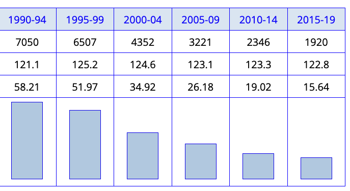
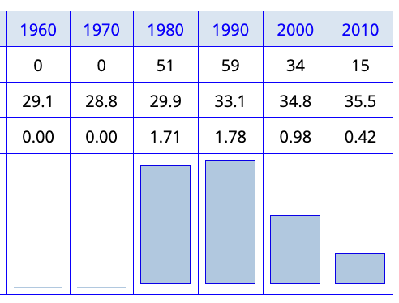

Lexicology: Synthesis and Wrap-up
Seminar ‘Lexicology’
Quirin Würschinger, LMU Munich
July 23, 2025
Course Journey
From dictionaries to dynamic systems
- Started with: What is a word? Dictionary entries and static definitions
- e.g. OED analysis of bro, spelling conventions defining words, Urban Dictionary vs Wiktionary approaches
- Explored: Morphological processes creating new words
- e.g. disclaimers morphological analysis, Brangelina blending, selfie clipping, word-formation productivity in OED
- Discovered: Words carry meaning through context and collocation
- e.g. cardiovascular vs cardio distributional differences, bro vs brother collocational patterns, Principle of No Synonymy
- Examined: How vocabulary changes across time and varies across users
- e.g. telephone → phone frequency decline, autumn vs fall regional variation, modal verb changes in COHA
- Concluded: The lexicon as a living, adaptive system
- e.g. S-curve model of smartphone diffusion, EC-Model of entrenchment and conventionalisation, social network effects
Theoretical Integration
The lexicon as a dynamic system
| Traditional view | Dynamic view | Examples from our course |
|---|---|---|
| Words as discrete units | Words as usage patterns | bro vs brother collocational differences |
| Meaning as fixed definitions | Meaning through distributional patterns | cardiovascular vs cardio semantic profiles |
| Vocabulary as inventory | Vocabulary as adaptive system | S-curve model of smartphone diffusion |
| Change as exceptional | Change as inherent property | telephone → phone frequency decline |
Core principles we’ve discovered
- No synonymy principle: Formal differences signal meaning differences
- cardiovascular vs cardio have different semantic profiles despite similar denotation
- Usage-based dynamics: Frequency patterns reveal entrenchment
- smartphone shows S-curve diffusion pattern from innovation to conventionalisation
- Distributional meaning: Context shapes and constrains interpretation
- bro vs brother have different collocational patterns reflecting distinct social functions
- Systematic variation: Social and situational factors drive patterned differences
- autumn vs fall show regional variation, modal verbs show register differences
- Historical layering: Contemporary vocabulary reflects cultural contact and change
- English lexicon shows Germanic core + French/Latin borrowings + global loanwords
Methodological Synthesis
Our analytical toolkit
Dictionary methods
- OED etymological analysis
- Historical attestation patterns
- Cross-linguistic comparison
Corpus linguistics
- Frequency analysis (raw, normalized)
- Collocations and word sketches
- Temporal variation tracking
- Register/genre differences
Quantitative analysis
- Tables and Pivot Tables
- Visualization techniques
- Descriptive statistics
- Coefficient of Variation
Qualitative interpretation
- Context-sensitive analysis
- Theory-data integration
- Hypothesis testing
Multi-method triangulation
Example: Modal verb change
- Dictionary: Semantic evolution of must vs have to
- Corpus: COHA frequency patterns 1850-2000
- Statistics: Variation coefficients across text types
- Theory: Grammaticalization and register specialization
Result: Converging evidence for systematic functional differentiation
Examples
Example 1: Tracking lexical obsolescence

The case of telephone
- OED: First attested 1844
- COCA analysis: Peak usage 1990s
- Current trend: Replaced by phone
- Method: Frequency tracking over time

The case of walkman
- Technology-specific term
- Clear rise and fall pattern
- Cultural obsolescence → lexical obsolescence
- Method: Historical corpus analysis
Example 2: Semantic innovation with bro

From kinship to solidarity marker
- Original meaning: ‘brother’ (family relation)
- New meaning: ‘close male friend’ (social relation)
- Corpus evidence:
- Text type specialization
- Different collocational patterns
- Method: Distributional semantic analysis
Example 3: Innovation diffusion patterns

The S-curve model in practice
- Slow start: Few early adopters
- Rapid growth: Social network effects
- Plateau: Market saturation
- Applications: smartphone, Covid-19, selfie
Example 4: Corpus analysis methods

Sketch Engine frequency analysis
- Creating your own corpora
- Querying corpora
- Frequency analysis: linguistic patterns, change, and variation
- Collocations and word sketches
Research Applications
Beyond lexicology
Where these skills apply:
- Sociolinguistics: Variation patterns in any linguistic feature
- ain’t vs am not across education levels
- Historical linguistics: Change mechanisms across language levels
- COHA collocates of gay showing semantic shift over time
- Corpus linguistics: Empirical validation of theoretical claims
- word sketch comparison of bro vs brother in Sketch Engine
- Applied linguistics: Language teaching and lexicography
- designing vocabulary lists and exercises based on corpus data
- Digital humanities: Text mining and cultural analytics
- social network analysis of hashtag diffusion on Twitter
- Discourse analysis: Context-meaning relationships
- collocation analysis of problem across text types
Research questions we can now tackle
- How do semantic neologisms spread through online communities?
- What social factors drive lexical innovation in specific domains?
- How does register variation interact with historical change?
- What cognitive mechanisms underlie entrenchment processes?
- How do contact situations shape borrowing patterns?
Case studies: Your term papers
What you investigated:
- Regional lexical variation
- Semantic change in social media
- Word-formation productivity
- Genre-specific vocabularies
- Borrowing patterns
How you could do it:
- Apply corpus methods to your own data
- Integrate multiple data sources
- Use appropriate statistical measures
- Connect findings to theory
- Critically interpret results
Future Directions
Emerging research areas
Digital lexicology
- Social media as innovation hub
- Real-time tracking of semantic change
- Large-scale diachronic analysis
- Domain-specific dictionaries and corpora
Cognitive approaches
- Psycholinguistic validation of corpus patterns
- Intra-individual and inter-individual variation
- Community-level variation
Continuing your lexicological journey
Advanced courses
- Corpus Linguistics: Methodological deepening
- Historical Linguistics: Change mechanisms
- Sociolinguistics: Variation theory
- Cognitive Linguistics: Usage-based approaches
Tools for continued learning
- Corpus platforms: Sketch Engine, COCA, Google Books Ngrams
- Dictionaries: OED, Wiktionary, Merriam-Webster
- Reference works: Oxford Handbook of Lexicology, Handbook of Word-Formation
- Journals: Applied Linguistics, English Language and Linguistics, Corpus Linguistics and Linguistic Theory
Reflection and Assessment
- What do you find most interesting about the lexicon and lexicology?
- Which skills and methods do you find most useful? How could you apply them?
Course evaluation
- What worked well?
- What could be improved?
- Suggestions for future iterations?
Final thoughts
The vocabulary of a language is not simply a list of words, but a structured system that reflects the history, culture, and cognitive patterns of its speakers.
You now have the tools to:
- Analyze lexical patterns systematically
- Apply empirical methods rigorously
- Interpret variation and change theoretically
- Connect linguistic data to broader questions
Thank you for participating in my course!